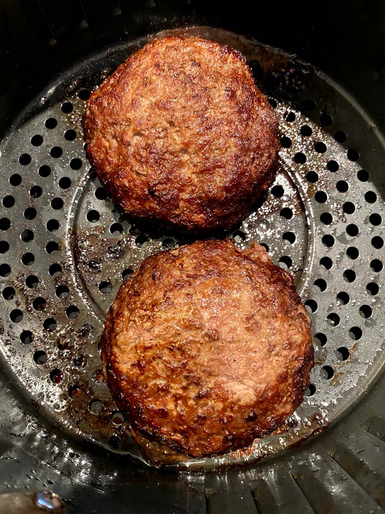

Air Fryer Hamburgers for Two

Description
This is an air fryer hamburger recipe designed to take half an hour total to prepare 2 servings.
Ingredients
- 1/2 lb ground beef
- 1 oz grated white Cheddar cheese
- 1 tbsp French-fried onions
- 1 tsp dry ranch dressing mix
- 1/2 tbsp sazon seasoning
- salt and ground black pepper to taste
Steps
- Preheat air fryer to 370 degrees Farenheit
- Mix ground beef, Cheddar cheese, French-fried onions, ranch mix, sazon seasoning, salt, and pepper together in a medium bowl. Shape into two equal hamburger patties.
- Air fry until internal thermometer is at least 160 degrees F (70 degrees C), about 6 minutes.